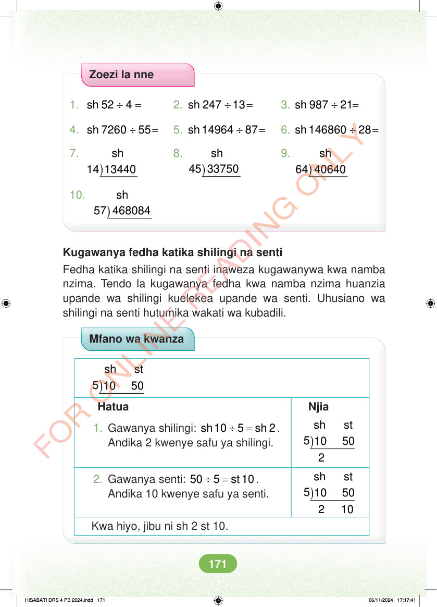

Zoezi la nne 1. ÷ = sh 52 4 2. ÷ = sh 247 13 3. ÷ = sh 987 21 4. ÷ = sh 7260 55 5. ÷ = sh 14964 87 6. ÷ = sh 146860 28 sh 64 40640 sh 14 13440 8. ) 7. ) sh 45 33750 9. ) sh 57 468084 10. ) Kugawanya fedha katika shilingi na senti Fedha katika shilingi na senti inaweza kugawanywa kwa namba nzima. Tendo la kugawanya fedha kwa namba nzima huanzia upande wa shilingi kuelekea upande wa senti. Uhusiano wa shilingi na senti hutumika wakati wa kubadili. Mfano wa kwanza sh st 5 10 50 ) Hatua Njia 1. Gawanya shilingi: ÷ = sh 10 5 sh 2. Andika 2 kwenye safu ya shilingi. ) sh st 5 10 50 2 2. Gawanya senti: ÷ = 50 5 st 10 . Andika 10 kwenye safu ya senti. ) sh st 5 10 50 2 10 Kwa hiyo, jibu ni sh 2 st 10. HISABATI DRS 4 PB 2024.indd 171 HISABATI DRS 4 PB 2024.indd 171 06/11/2024 17:17:41 06/11/2024 17:17:41